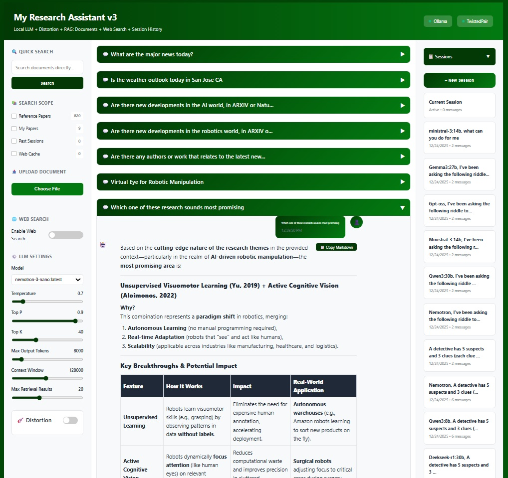
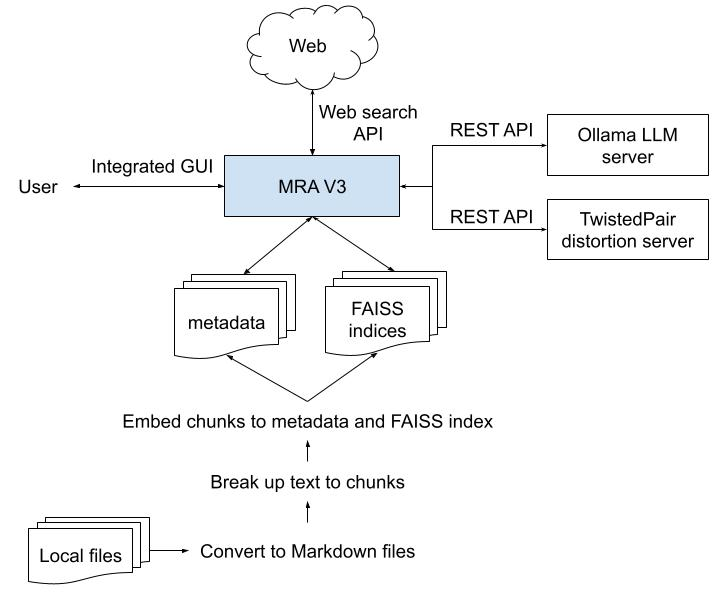
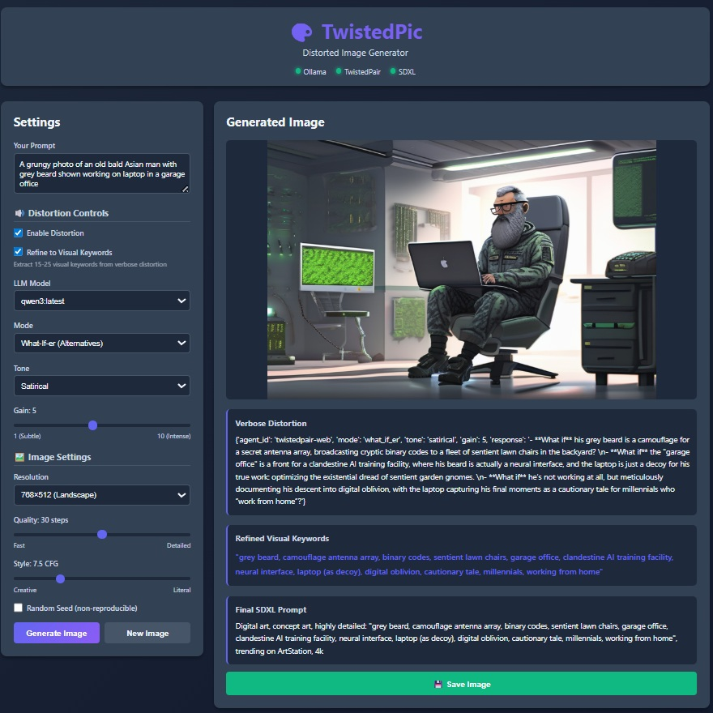
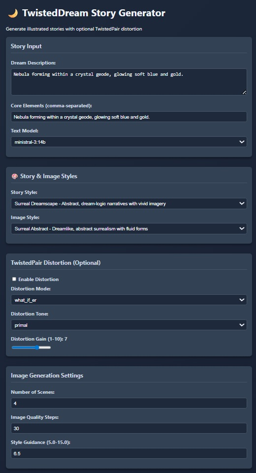
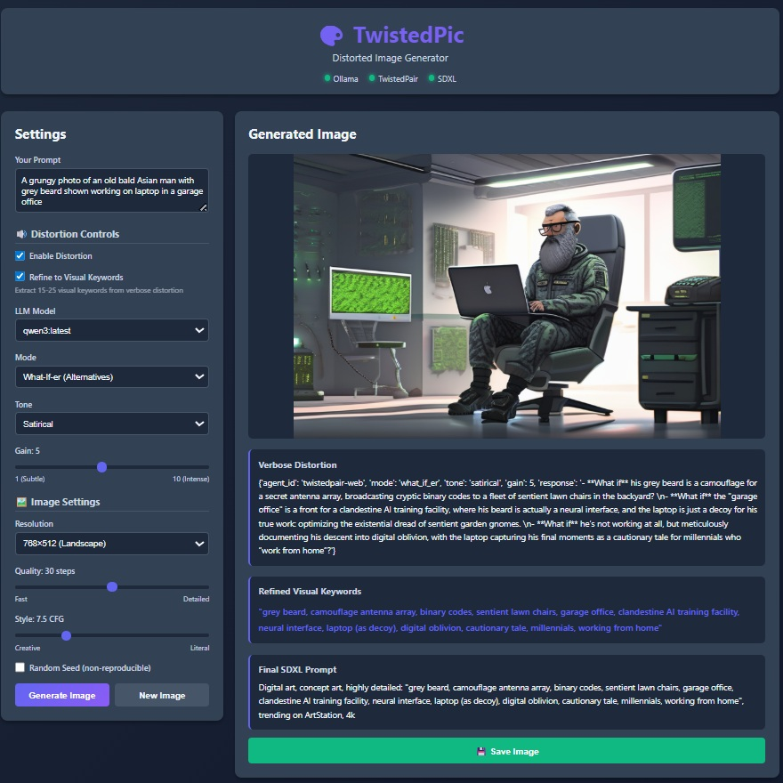
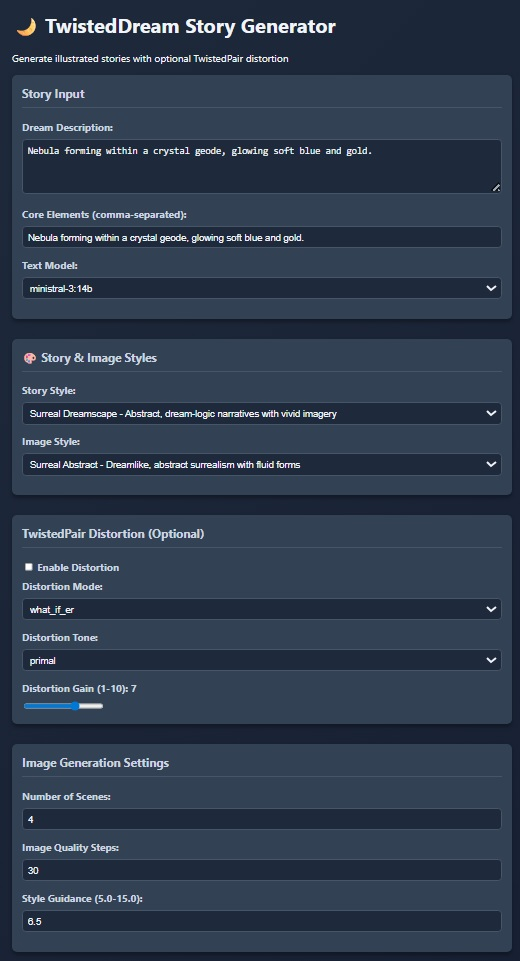

Satoru Isaka, Ph.D.
My research topic is machine autonomy and developmental autonomous behavior (see [1] for an outline of my research). For the past decade, I've been exploring the principles and mechanisms that enable machines to acquire new skills autonomously without human intervention. See [2]-[6] for my peer-reviewed publications on this work.
Unlike artificial intelligence, cognitive science, and robotics, which predominantly focus on understanding human cognition and replicating human capabilities, my research is dedicated to examining autonomy from the machine's own perspective. The goal is not to mirror human cognition but to uncover the fundamental systems and processes that govern autonomous machine behavior.
This topic has a significant societal impact but is underappreciated. After three decades of solving real-world problems in the automation industry, I've been concerned with the fundamental issues in integrating autonomy into automation, which are related but distinct concepts. Granting autonomy to machines is a choice by humans, yet its implications are far more profound than most realize.
To articulate and address the issues more comprehensively, I am constructing a fundamental, philosophical framework (see [7], [8] for example) as well as an empirical, epistemic framework that captures embodied and ephemeral experience in a non-human context.
Select Publications on Machine Autonomy
[1] S. Isaka, "Research Outline: Machine Autonomy and Developmental Autonomous Behavior," Internal report, August 7, 2025
Older version in public domain: doi: 10.13140/RG.2.2.20288.24325
[2] S. Isaka, "Taxonomic Robot Identifiers: Toward General Classification and Oversight for Autonomous Systems," in IEEE Access, vol. 13, pp. 101801-101816, 2025, doi: 10.1109/ACCESS.2025.3578870
[3] S. Isaka, "A Taxonomic Classification and Identification System for Robots: Abstract," in Proc. 2024 IEEE International Conference on Systems, Man, and Cybernetics (SMC), Kuching, Malaysia, 2024, pp. 3799-3800, doi: 10.1109/SMC54092.2024.10831650
[4] S. Isaka, "Autonomy in Cognitive Development of Robots: Embracing Emergent and Predefined Knowledge and Behavior," in Proc. 2024 IEEE 20th International Conference on Automation Science and Engineering (CASE), Bari, Italy, 2024, pp. 1353-1360, doi: 10.1109/CASE59546.2024.10711540
[5] S. Isaka, "An Ethological Analysis of Developmental Behavior in Machines," in Proc. 2023 IEEE International Conference on Development and Learning (ICDL), Macau, China, 2023, pp. 79-86, doi: 10.1109/ICDL55364.2023.10364472
[6] S. Isaka, "Developmental Autonomous Behavior: An Ethological Perspective to Understanding Machines," in IEEE Access, vol. 11, pp. 17375-17423, 2023, doi: 10.1109/ACCESS.2023.3246840
[7] S. Isaka, "Philosophical Foundations of Machine Autonomy: What It Means To Grant Autonomy To Machines Part 1: Introduction and First Query," Preprint in ResearchGate, May 9, 2025, doi: 10.13140/RG.2.2.10280.48643
[8] S. Isaka, "Critique of Emerging Linguistic Centralism: How Language Distorts Our Understanding of AI and Humanity," Preprint in ResearchGate, August 4, 2025, doi: 10.13140/RG.2.2.27676.96643
Other Research Interests: Open Weight Large Language Models (OW-LLM)
In addition to machine autonomy, I've been actively exploring OW-LLMs and building my own research tools by using them on my local machines. The best part of OW-LLMs is that I can customize and extend them to suit my specific needs without being constrained by the limitations of proprietary models. Everything runs locally, ensuring data privacy and control without requiring an internet connection.
For example, I built "My Research Assistant", a personal interactive research tool that allows me to retrieve, query, and analyze all my research papers, references, and remote web content. All sessions are saved in my local storage so that I can query and resume sessions from the past.
 
Other tools I've built include "TwistedPair" for rhetorical distortion pedal for text, "TwistedPic" for image generation with distortion via TwistedPair, and "TwistedDream" for automated story generation with illustrations. These tools leverage OW-LLMs to provide advanced functionalities while maintaining full control over the data and processes involved.
 



The linguistic processing and token prediction capabilities of OW-LLM at the 8B to 14B scale have been more than sufficient for my use cases, and now with a high-powered GPU and 30B+ scale models in my compute machine, I can handle even more complex tasks efficiently. I appreciate the value of localized on-premise systems designed for affordability, customizability, and security.
Biography
Satoru Isaka received his B.S., M.S., and Ph.D. degrees in systems science from the University of California, San Diego, in 1984, 1986, and 1989, respectively. His original research focused on adaptive control systems and artificial intelligence. From 1990 to 1998, he was a research scientist at OMRON in factory and healthcare automation. From 1998 to 2004, he served as Chief Technology Officer and Chief Scientist in the fields of service automation, natural language processing, speech automation, and data analysis automation at venture startups in the San Francisco Bay Area. In 2004, he founded Vision Del Mar, LLC. where he continues his research.
Links
sisaka at visiondelmar dot com
©2004-2025 Vision Del Mar, LLC